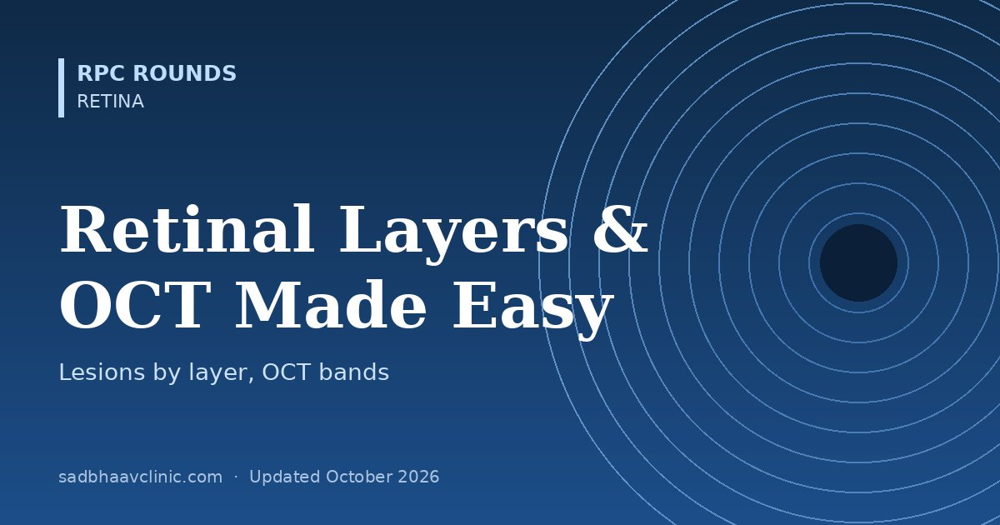

Last updated: October 2026
Ten retinal layers, four outer OCT bands and a dozen lesion types: it is easy to get lost. But the retina is simply a three-neuron relay with two blood supplies. Once you see that, you can place any haemorrhage, exudate or fluid pocket in its layer, and read an OCT scan from top to bottom.
| Finding | Layer | Why |
|---|---|---|
| Flame haemorrhage | Nerve fibre layer | Blood tracks along horizontal axons; hypertension, CRVO, disc oedema |
| Cotton wool spot | Nerve fibre layer | Axoplasmic stasis from a micro-infarct; diabetes, hypertension, HIV, lupus |
| Dot and blot haemorrhages | Inner nuclear / outer plexiform | Vertical cell columns confine blood; diabetic retinopathy, ocular ischaemia |
| Hard exudates | Outer plexiform (Henle) | Lipid leaks from capillaries; star at the macula in neuroretinitis and hypertension |
| Cystoid macular oedema | Inner nuclear + outer plexiform | Petaloid on FA because of radial Henle fibres |
| PAMM (paracentral acute middle maculopathy) | Inner nuclear layer band | Ischaemia of the intermediate and deep capillary plexuses |
| Preretinal (sub-hyaloid) blood | Between ILM / hyaloid and retina | Boat-shaped with a fluid level; Valsalva, PDR, Terson |
| Subretinal fluid or blood | Between photoreceptors and RPE | CSCR, neovascular AMD, RD |
| Drusen, PED | Between RPE and Bruch's membrane | Dry AMD, type 1 MNV |
| Subretinal drusenoid deposits (reticular pseudodrusen) | Above the RPE | High-risk AMD feature |
| Roth spot | White-centred haemorrhage, any inner layer | Platelet-fibrin plug; endocarditis, leukaemia, anaemia |
Memory hook: Flames in the Fibres; Dots in the Deep (INL); exudates make Henle's star.
| Band | Name | What it is | If lost |
|---|---|---|---|
| 1 | External limiting membrane (ELM) | Junctions between Müller cells and photoreceptors | Poorer visual prognosis |
| 2 | Ellipsoid zone (EZ) | Mitochondria-rich photoreceptor inner segments | Photoreceptor damage: macular hole, hydroxychloroquine toxicity, MEWDS, RP |
| 3 | Interdigitation zone (IZ) | Cone outer segment tips meeting RPE microvilli | Often first to go in early disease |
| 4 | RPE / Bruch's complex | Pigment epithelium and its basement membrane | Atrophy (hypertransmission into the choroid) |
Memory hook: Read from top down: ELM, EZ, IZ, RPE: “Every Eye Is Readable”.
| Where | OCT look | Typical causes |
|---|---|---|
| Intraretinal fluid (IRF) | Dark cysts in the INL and OPL | Diabetic macular oedema, CRVO, uveitis, post-cataract (Irvine–Gass) |
| Subretinal fluid (SRF) | Dark dome between the photoreceptors and RPE | CSCR, neovascular AMD, VKH, optic pit |
| Sub-RPE (PED) | RPE lifted off Bruch's membrane | Serous, drusenoid or fibrovascular PED; polypoidal vasculopathy |
| Type 1 MNV | Under the RPE | Occult CNV of AMD; polypoidal choroidal vasculopathy (aneurysmal type 1) |
| Type 2 MNV | Above the RPE (subretinal) | Classic CNV; myopic CNV, younger patients |
| Type 3 MNV | Within the retina, from the deep plexus | Retinal angiomatous proliferation in older patients |
On OCT angiography the retinal capillaries form a superficial plexus (in the GCL/NFL), an intermediate plexus (inner border of the INL) and a deep plexus (outer border of the INL). The choriocapillaris sits just under Bruch's membrane.
| Occlusion | Layer that dies | Sign |
|---|---|---|
| Central retinal artery | Inner retina | White oedema, cherry-red spot, later thin inner retina on OCT |
| Cilioretinal artery | Inner retina between disc and fovea | Can be the only vessel spared in CRAO, preserving central vision |
| Deep capillary plexus | Middle retina (INL) | PAMM: grey patches; band in INL on OCT |
| Choroidal vessels | Outer retina and RPE | Elschnig spots (hypertension), triangular sign of Amalric (posterior ciliary) |
Where residents slip
Related: Retina hub, OCT macula reference, OCT interpretation tips, DME OCT biomarkers, Layers of the eye.
📘 Want more exam-ready material? See Most Commons in Ophthalmology on Kindle, or browse all my books.
Looking for an eye specialist in Ahmedabad? Learn about our Eye Department or book a consultation with Dr. Dhaval Patel.